最全Pycharm教程（33）——使用Pycharm编写IPythonNotebook文件
1、主题
详细介绍如何使用PyCharm创建一个IPython Notebook（基于Web技术的交互式计算文档格式）并运行。
2、准备工作
（1）已经创建一个工程，这里使用C:/SampleProjects/py/IPythonNotebookExample目录下的工程。
（2）在设置对话框的Project Interpreter page页面中，
创建一个虚拟环境created a virtual environment，这里创建了针对Python.2.7.8的虚拟环境
安装了以下库installed the following packages：
- Jinja2
- ipython
- matplotlib
- numpy
- pyzmq
- tornado
- sympy
当然Pycharm可以帮助我们自动进行安装。
3、创建一个IPython Notebook文件
右击工程名，选择New → File：
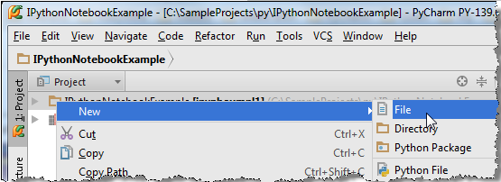
输入名称及其外部扩展 MatplotlibExample.ipynb：
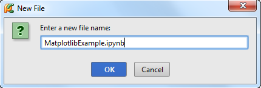
此时在Project tool window显示了一个新创建的文件：
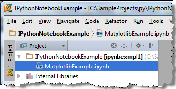
双击打开它，这是一个空的IPython Notebook文件，以为标记，并有着与真正的IPython Notebook非常相似的工具栏：
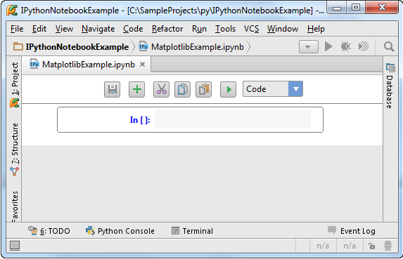
4、填充并运行一个文件胞
单击第一个元胞，输入代码，这里键入matplotlib库的配置代码：
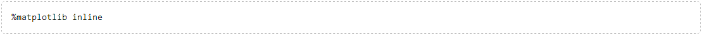
单击工具栏上的（或者Shift+Enter）运行，Pycharm会弹出一个对话框显示IPython Notebook服务运行的URL地址：
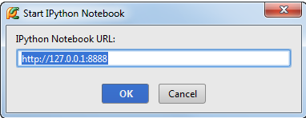
单击OK：
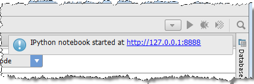
可以通过浏览器来打开这个链接：
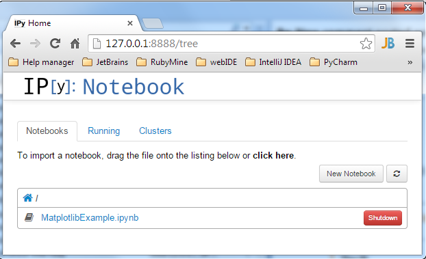
在设置对话框中的 IPython Notebook中指定了其默认的URL。接下来我们开始真正使用IPython Notebook。
5、使用cells
首先，写上import语句：
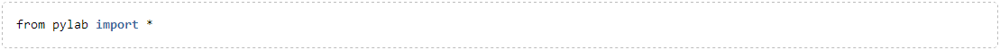
当你运行第一个cell时，Pycharm会默认创建下一个空的cell：
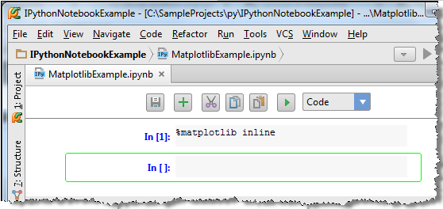
输入代码（体会拼写助手功能）：
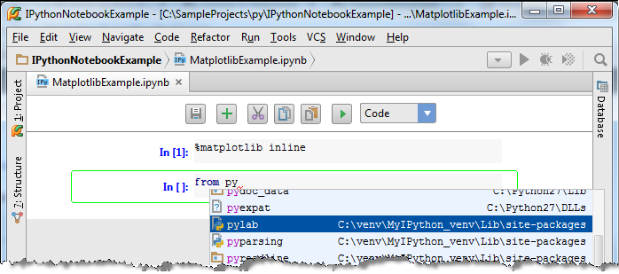
单击再次运行，无输出，但有创建了一个新的cell。
在新的cell里面输入如下代码;
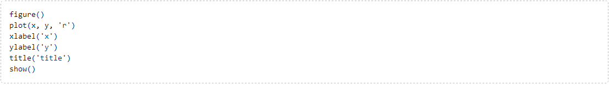
运行这个cell，报错：
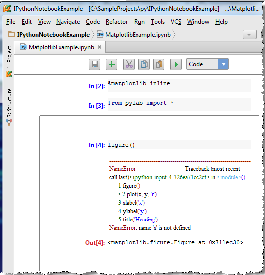
变量需要提前定义，因此我们再添加一个新的cell。
6、添加cell
单击import语句所在cell（变绿框），单击绿色的加号（或者是Alt+Enter快捷键）：
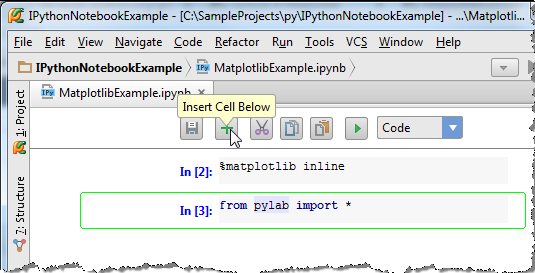
输入变量定义代码：

先运行这个cell，在运行下一个cell，输出正常：

7、cell的剪贴板操作
在工具栏中，除了和按钮，还有（Ctrl+X）、（Ctrl+C）以及（Ctrl+V）按钮，如果单击，则删除当前cell，并将其缓存于剪贴板上。
是粘贴，是复制，其余按钮功能大家自己体会。
8、选择风格
工具栏右侧下拉菜单用于指定界面风格，这里默认为code分割。
单击import语句的cell，单击，默认创建code风格的cell，输入一下代码：

单击下拉箭头选择Markdown模式：
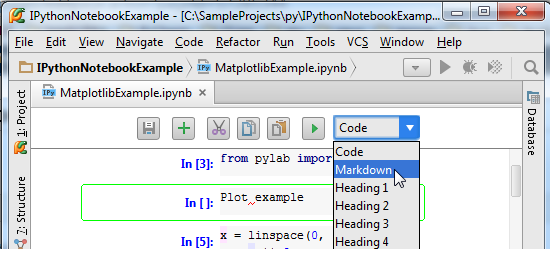
cell外观发生响应改变：
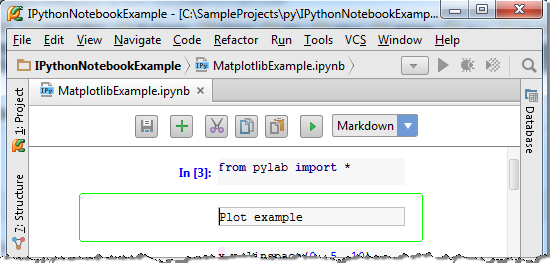
单击：
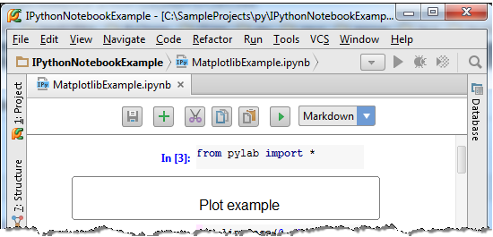
OK，接下来可以选择你喜欢的style类型:
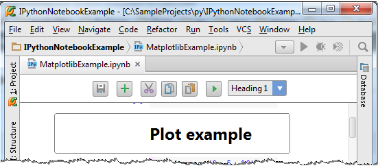
9、输入格式
添加一个新的cell，选择Markdown格式，输入以下代码：

单击：
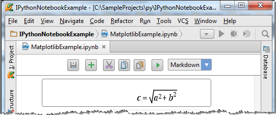
正如你所见，IPython Notebook可以实现Latex格式的公式编辑。
接下来尝试更复杂的功能，显示公式的计算结果。添加一个cell，输入一下代码（来自SymPy: Open Source Symbolic Mathematics）：
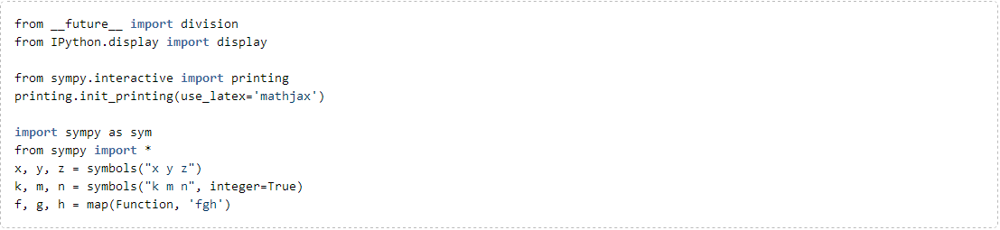
运行，无输出，继续添加cell，输入代码：
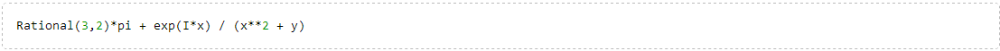
单击，享受结果吧：
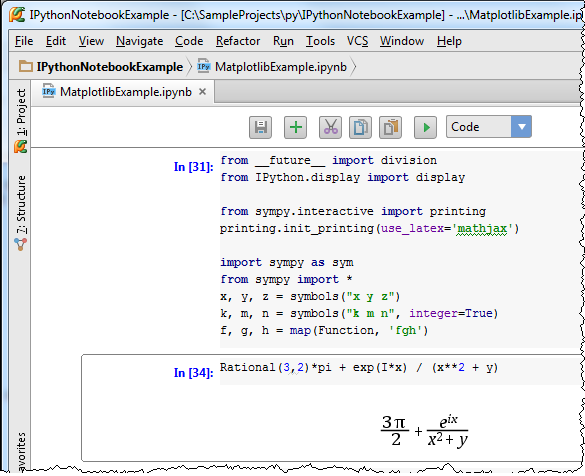